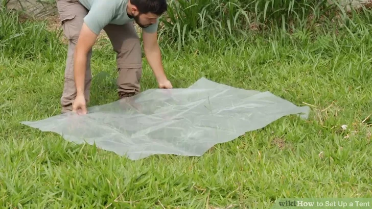

How To Set Up A Tent
Step One:

Lay a tarp down before putting up your tent. When setting up your tent, it's important to put a barrier in between the ground and the bottom of your tent to protect it from gathering moisture. A good-quality plastic or vinyl tarp should accompany any tent.
- Fold the tarp into the relative shape of the tent, but slightly smaller. You don't want any part of the tarp to hang out beyond the edge of the tent, otherwise it'll collect water underneath in case it rains. Fold up longer edges and tuck them under the tent.
Step Two:
Lay out and account for all the components of your tent. Most modern tents are made of lightweight nylon, all-in-one tent poles, and stakes, while older army-style tents often feature more complicated poles and cloth coverings. At the very least, you'll need the tent itself and the poles, and the method of putting them is generally the same.
Step Three:
Lay your tent onto the tarp. Find the bottom side of the tent and put that side down on the tarp. Orient the windows and door of the tent in the direction you'd like them to face. Lay it out flat and turn your attention to the poles.
Step Four:
Connect your tent poles. Depending on your particular tent, they may be connected with bungee ropes, or they may be numbered and require that you connect them yourself. Put the tent poles together and lay them across the flat tent.
Step Five:
Insert tent poles into the corresponding flaps in the tent. Most basic tents will have two tent poles that cross each other to form an X that will form the basic frame of the tent. To fit them into the tent, usually you'll put the end of the pole into an eyelet at each corner, and slide the pole either through small flaps on the top of the tent, or attach plastic clips on the top of the tent to the pole.
- Read the directions for your particular tent, or look closely to determine how the poles fit in. All tents are differently designed.